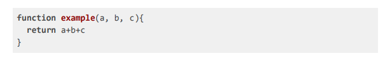
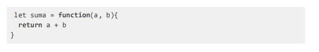
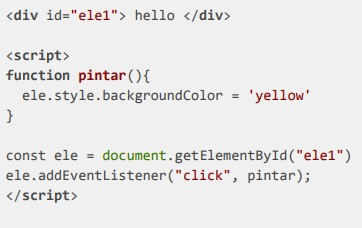
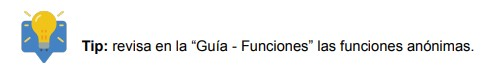

Transforma esta declaración de función a una función de expresión. El ejercicio debe quedar en un archivo nombrado `1_funcion.js` (1 Punto)
const example = (a, b, c) => { return a + b + c }
Transforma la siguiente función a una arrow function de una línea. Este ejercicio debe quedar en un archivo llamado `2_arrow.js` (1 Punto)
const suma = (a, b) => { return a + b }
Se tiene como base el siguiente ejercicio que cambia el color de fondo de un elemento de HTML al hacerle click (3 Puntos)
El código debe estar en 2 archivos: pintar.html y script.js. El script debe estar dentro de la carpeta assets/js (1 Punto). Para obtener el puntaje debes entregar los archivos cumplimiendo la estructura pedida en conjunto con los requerimientos de 2.2 y 2.3
Modifica la función para que reciba el elemento clickeado de forma de no tener que seleccionarlo nuevamente dentro de la función (1 Punto). Para obtener el puntaje, debes entregar los archivos pintar.html y script.js funcionando en conjunto con el código modificado.
Modifica el código anterior para poder pasarle un color como argumento a la función pintar. El color debe ser verde (green) por defecto, al hacer clic en el párrafo se debe pasar amarillo como color. (1 Punto).